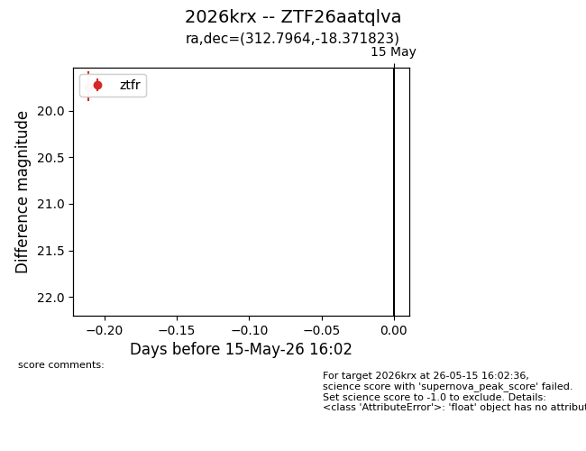
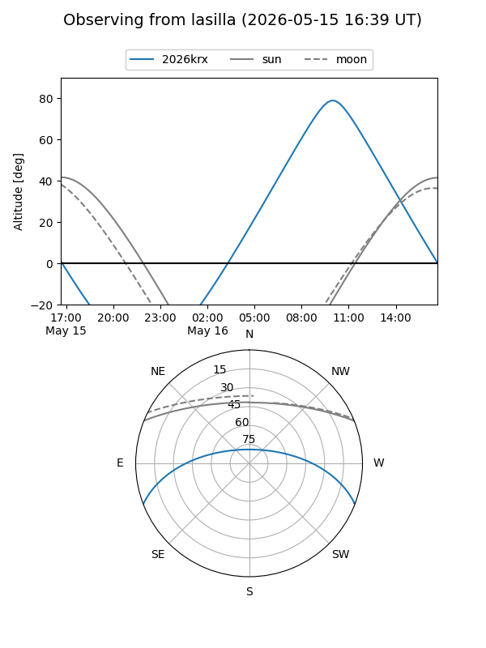
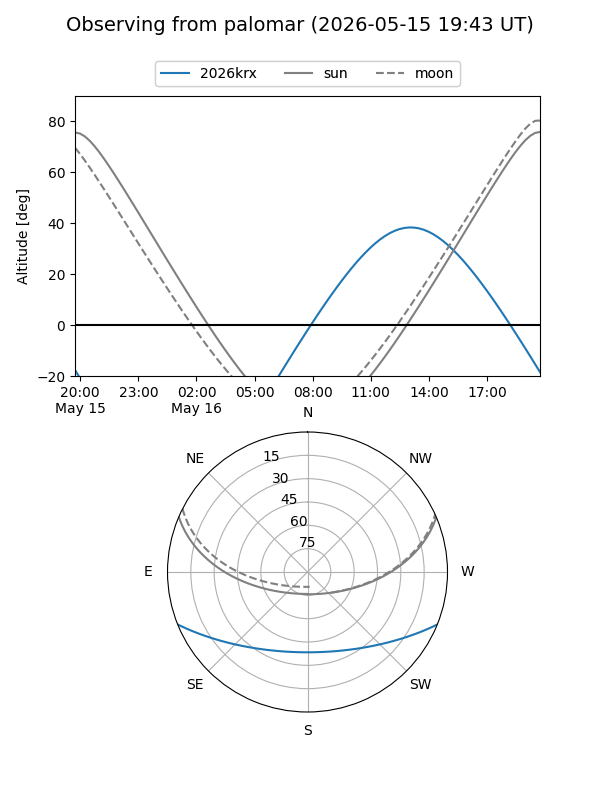
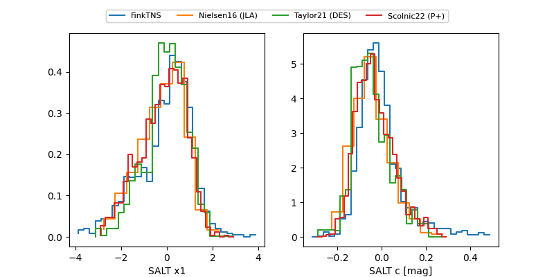

2026krx
Target 2026krx at 2026-05-15 16:04
Aliases and brokers:
FINK: link
Lasair: link
ALeRCE: link
TNS: link
YSE: link
alt names
ZTF26aatqlva (ztf,fink_ztf)
2026krx (tns,yse)
Coordinates:
equatorial (ra, dec) = 312.7964,-18.37182
equatorial (HMS+DMS) = 20:51:11.14,-18:22:18.56
galactic (l, b) = (28.4441,-34.41799)
Flags:
Photometry:
last ztfr=19.74
1 ztfr detections
Lightcurve

Visibility


Additional plots
